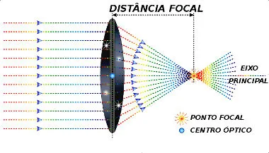
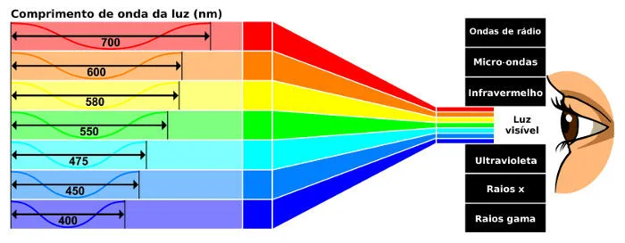

A formação de imagens é um conceito fundamental da óptica geométrica, uma área da física que estuda o comportamento da luz ao interagir com diferentes superfícies e meios. Esse processo ocorre principalmente por meio de dois fenômenos: a reflexão (quando a luz bate e volta, como nos espelhos) e a refração (quando a luz muda de meio e sofre desvio, como nas lentes).
Nos espelhos planos, a imagem formada é sempre virtual, direita e do mesmo tamanho do objeto, servindo para o nosso uso cotidiano. Já os espelhos esféricos e as lentes oferecem muito mais possibilidades. Os sistemas côncavos ou convergentes conseguem ampliar imagens ou projetá-las em uma tela, sendo a base para o funcionamento de projetores de cinema, telescópios e microscópios. Por outro lado, os sistemas convexos ou divergentes ampliam o campo de visão, sendo muito utilizados em retrovisores de carros, espelhos de segurança em lojas e na correção de problemas de visão como a miopia.
Além das lentes artificiais, o próprio olho humano funciona como um sistema óptico complexo. A luz passa pela córnea e pelo cristalino, que atuam como lentes convergentes, projetando uma imagem real e invertida diretamente na retina. O cérebro, então, recebe esses estímulos nervosos e interpreta a imagem na posição correta. Dessa forma, seja na biologia ou na tecnologia das câmeras fotográficas e telas, o controle da trajetória da luz é o que nos permite registrar e enxergar o mundo ao nosso redor.

A cor não é uma propriedade fixa dos objetos, mas sim a interpretação que nossos olhos e cérebro fazem da luz refletida.
A Natureza da Luz: A luz visível é uma onda eletromagnética. Cada cor tem um comprimento de onda diferente, indo do vermelho (maior onda/menor energia) ao violeta (menor onda/maior energia).
Interação com os Objetos: Enxergamos a cor que um objeto reflete. Uma fruta verde absorve todas as cores da luz e reflete apenas o verde. O branco reflete todas as cores, e o preto absorve todas (transformando-as em calor).
Sistemas de Cores:
• Aditivo (RGB): Baseado em luz (telas). A soma de vermelho, verde e azul resulta em branco.
• Subtrativo (CMYK): Baseado em pigmentos (tintas). A soma de ciano, magenta e amarelo resulta em preto.
A percepção final acontece nos olhos através de células chamadas cones, que captam essas variações e enviam a informação para o cérebro.

A reflexão ocorre quando a luz atinge uma superfície polida e retorna de forma organizada, seguindo a Lei da Reflexão: o ângulo com que a luz chega é idêntico ao ângulo com que ela sai.
Os espelhos são classificados pelo formato de sua superfície, determinando o tipo de imagem que geram:
• Espelhos Planos: Formam imagens idênticas ao objeto em tamanho e distância, mas invertidas lateralmente.
• Espelhos Côncavos: Concentram a luz. Podem ampliar a imagem ou projetá-la de cabeça para baixo.
• Espelhos Convexos: Espalham a luz. Formam sempre imagens menores, mas oferecem um campo de visão ampliado.
.jpg)
O olho humano funciona como uma câmera fotográfica, onde várias estruturas desviam (refratam) a luz para formar imagens:
• Córnea e Cristalino: São as lentes do olho.
• Íris e Pupila: Controlam a quantidade de luz que entra.
• Retina: Funciona como o sensor digital.
Erros de Refração:
• Miopia: O olho é longo; a imagem foca antes da retina.
• Hipermetropia: O olho é curto; a imagem foca atrás da retina.
• Astigmatismo: A córnea tem curvatura irregular.

A formação de imagens é um conceito fundamental da óptica geométrica, uma área da física que estuda o comportamento da luz ao interagir com diferentes superfícies e meios...